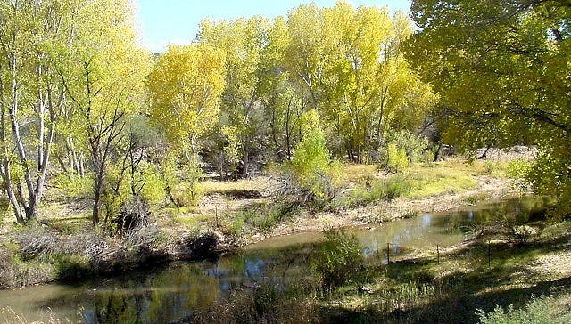

San Pedro River, Arizona and Sonora

The San Pedro River, which flows north from Sonora into Arizona, is internationally recognized for its high biodiversity and ecological significance. On the San Pedro, tradeoffs between human water use and the groundwater and surface flow that support the San Pedro River's riparian ecosystems are at the forefront of debates about population, water use, and sustainability. Photo credit: R.Weller/Cochise College.